Dialogflow 是什麼？
Dialogflow 原名為 API.AI 在 2016年9月被 Google 收購，2017年10月10日更名為Dialogflow 。Dialogflow 主要是用於開發人機對話的平台，透過創建關鍵字及意圖，當完成創建後，使用者只要下達意圖，機器就能找到相關的關鍵字去做你想做的事情。例如：下達意圖：我要關燈，Dialogflow 就會分解你字句，動作：關、裝置：燈，透過簡單的設定就能達到我們想要達成的目的。
Action on Google
Action on Google像是行前說明會，也像是在自我介紹，介紹你在 Dialogflow 創建App的目的、作者…等。Action on Google 裡面有模擬器，可以模擬 Google Assistant 在手機裡運作情形，方便用於開發。另外 Action on Google 還可以下載 JSON 檔，直接把樹莓派安裝成 Google Home 連手機裡的 App 都可以捨去了。
架構圖
這次我要介紹第三部分，從 Action on Google 專案發佈到 Dialogflow App 建立過程，過程會有點繁瑣，我也是摸索過一陣子才曉得如何使用，而且我認為這兩個平台都還在開發中階段，所以變動很快，網路上有很多Blog資訊也已經不能使用了，如果我沒注意到更新話，歡迎留言問題給我喔。
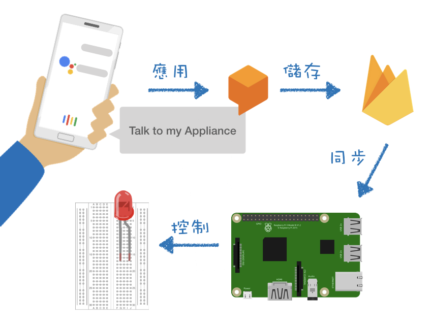
建立專案
首先登入 Actions Console 點擊Add/import project ，在 Enter name or choose a project 選擇上一篇 創建的 Firebase 專案
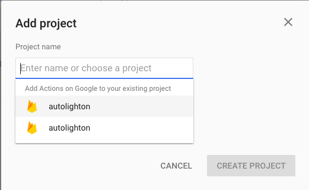
編輯專案
進入專案點擊 Overview 可以看到總共有五個步驟，點擊 Add actions to your app 裡的
ADD ACTION 可以看到有三種選擇，找到 Dialogflow 的 BUILD ，頁面會跳轉到 Dialogflow 開始我們的第一步。
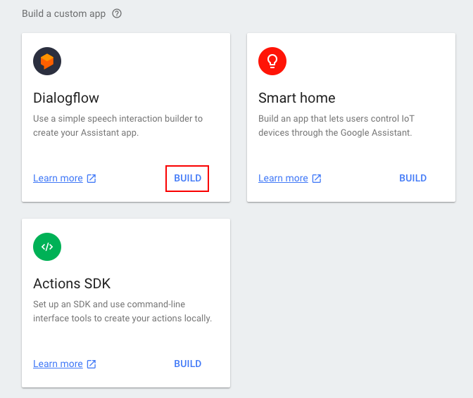
Dialogflow
頁面會跳轉到 Dialogflow 後，我們需要創建一個 Dialogflow 專案， 通常專案名稱會從妳 Firebase 專案名稱帶入，我們只需要按下 CREATE
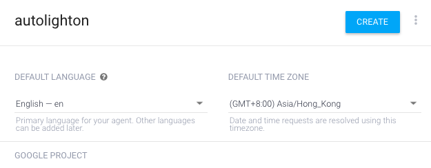
新增關鍵字(Entities)
在 Dialogflow 左側選單找到 Entities ，點擊 CREATE ENTITY 。
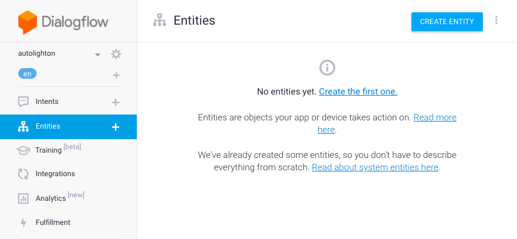
在上一篇我們 Firebase 的結構分別有，裝置：light、值：on或off ，分別建立兩個 Entities 一個為 devices、一個為status，在前面的 Enter reference value 輸入 light，後面的 Enter synonym 輸入其他可能的稱呼，例如：lamp、LED之類的。
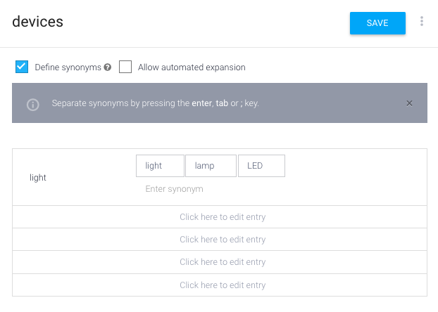
status同理，一樣新建兩個數值ON跟OFF，直接附上。
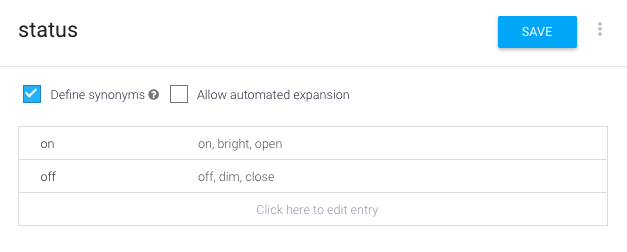
新增意圖(Intents)
輸入動作要取的名稱，在 Training phrases 點擊 ADD TRAINING PHRASES ， 開始輸入你要機器讀懂你哪些話，例如：switch my light on 。
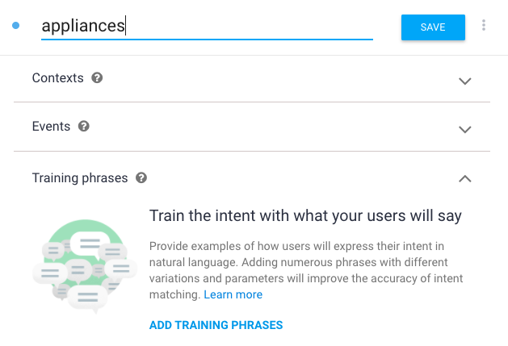
鍵盤Enter輸入後，可以看到系統自動把關鍵字反白起來，對應到剛剛
所建立的 Entities 。
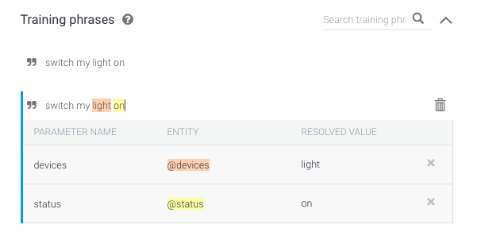
如果系統沒抓到沒關係，你也可以手動反白，跳出選單後，點選剛剛建立的 Entities
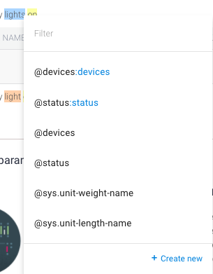
建立 Intents 工作先告一段落，最後一個步驟，拉到最下面 Fulfillment 點選 ENABLE FULFILLMENT ， 啟動 webhook 後 ，按 SAVE 儲存。
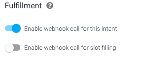
Fulfillment
左側選單找到 Fulfillment ，啟動 Inline Editor
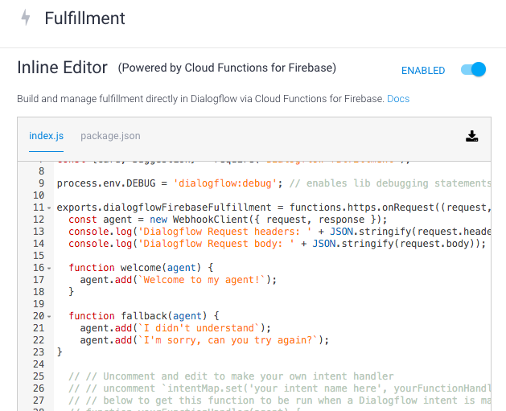
貼上以下程式碼，記得要改FirebaseProject ID ，點擊 DEPLOY，到 Firebase左側選單 Functions 的資訊主頁，會出現了剛剛新增的請求 dialogflowFirebaseFulfillment。
1 | // See https://github.com/dialogflow/dialogflow-fulfillment-nodejs |
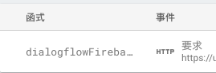
主要新增 firebase-admin，目的在於處理語音同時，一起將數值儲存於Firebase裡。而 /auto/${device}/…，為 Firebase 裡的資料結構， appliances 為上步驟的名稱，handlerRequest 為第34行 function 的名稱。
經由 WebhookClient 我們可以得到 Google Assistant 的語音拆解。在 Fulfillment 右側 Try it now 輸入 switch my light on
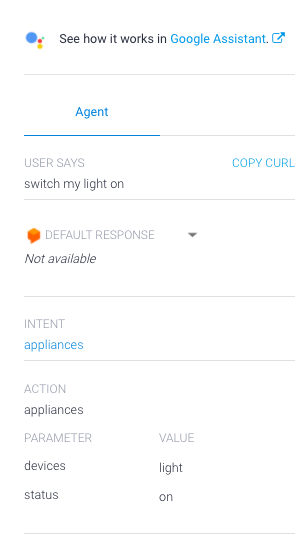
agent.parameters.devices 可以得到 light，agent.parameters.status 得到 on 。 這些資訊我們可以在Firebase Functions 紀錄看到，因為我們程式碼有 console.log
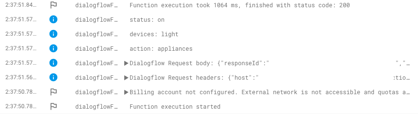
而 Firebase Database 裡的資料理應被我們改為on了
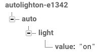
測試
打開樹莓派終端機，輸入以下，並在 Dialogflow 右側試著輸入你的指令吧！1
node xxx.js //xxx為路徑＋檔案名稱
恭喜我們完成了最繁雜的第一步驟！ 下一篇我們就可以完成囉